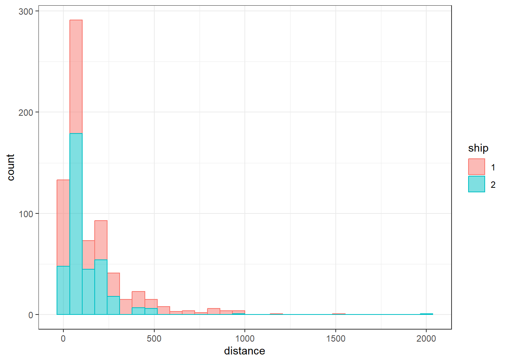
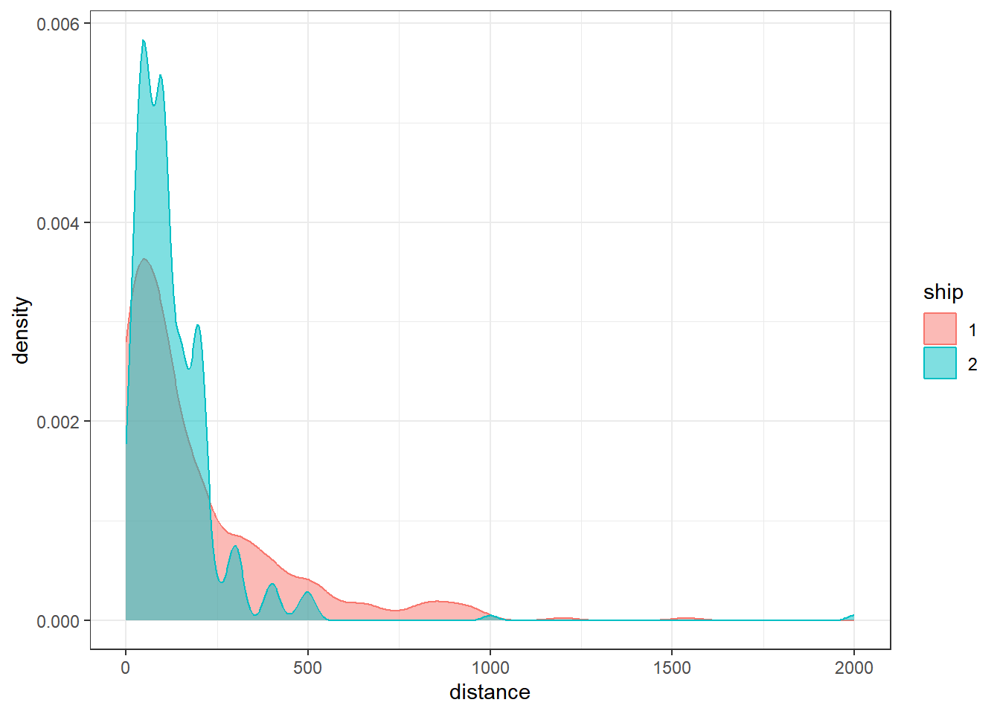
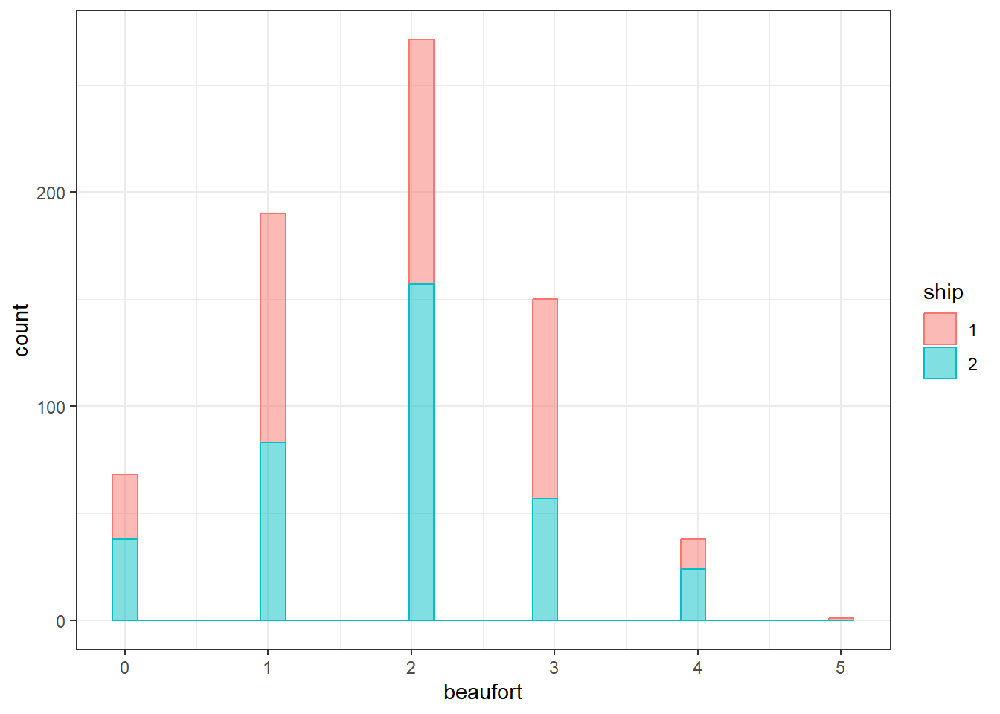
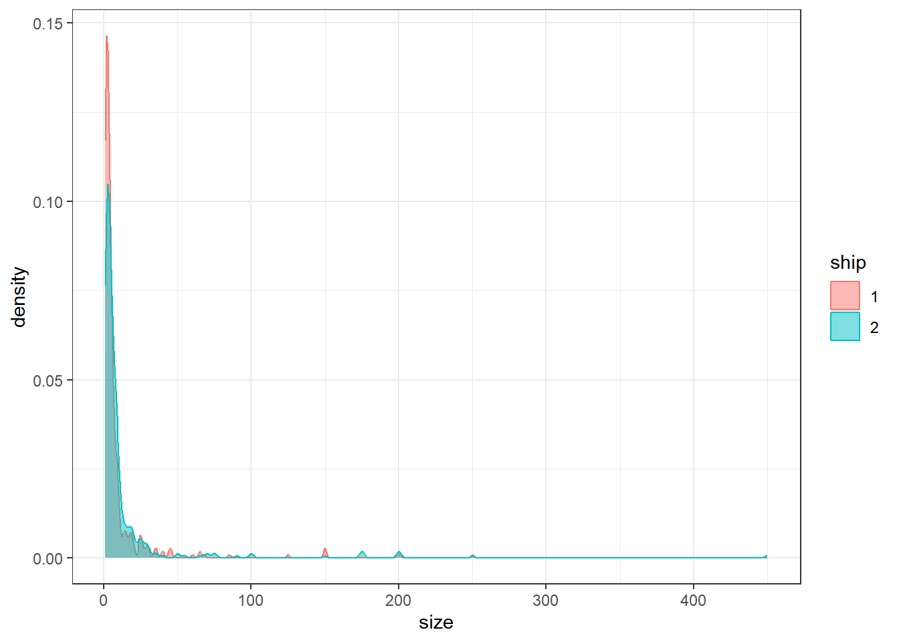
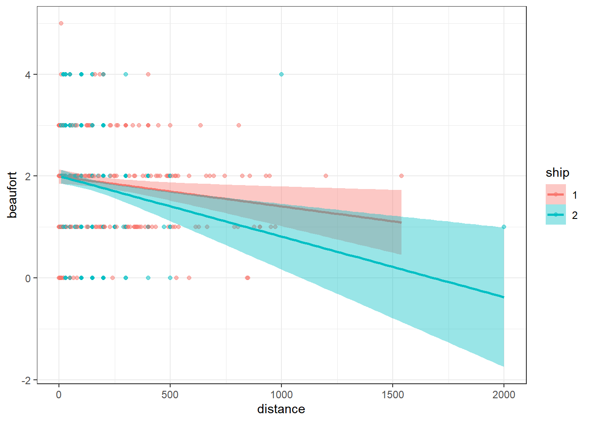

Delfines Comunes
Censos
Exploratory Data Analysis
Efecto de barco
Distancia
Parece haber efecto del barco sobre la distancia a la que se detectan delfines comunes. Considerar incluir en la funcion de deteccion


Tamaño grupal
Barco no parece tener efecto sobre el tamaño grupal detectado


Estado del mar
Barco
No hay diferencias en el estado del mar en el que se hicieron censos, dependiendo del barco

Distancia
No hay diferencia entre barcos en la distancia a la que se hicieron observaciones, como funcion del estado del mar
Descartar observaciones con Beaufort = 5
Considerar si descartar Beaufort = 4

Variables espaciales
Escala: periodo
Profundidad
Parece haber mayor cantidad de detecciones en la zona donde aumenta la profundidad - alrededor de northing 5.47 Mm

Pendiente
La zona donde hay mas detecciones parece ser donde hay una pendiente mas pronunciada

Gradiente
(No estoy seguro que es esta variable)
No parece infuenciar la deteccion de animales

Conclusion escala periodo
Evaluar la incorporacion de pendiente y profundidad en la funcion de deteccion - creo que codifican la misma informacion
Escala estacional
Ninguna de las variables ambientales medidas a escala estacional parece tener relacion con la deteccion de animales
Temperatura sperficial del mar

Clorofila

dist.up
(No estoy seguro que es)